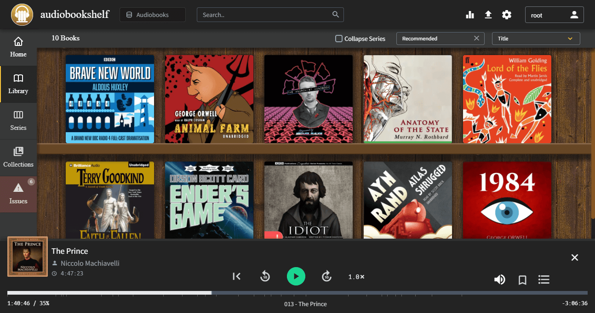

Audiobookshelf es un servidor de audiolibros autohospedado para administrar y reproducir tus audiolibros tanto en tu móvil como en una página web.

/audiobooks es donde vamos a dejar nuestros audiolibros.Para construir el servicio:
services:
audiobookshelf:
image: advplyr/audiobookshelf
ports:
- 13378:80
volumes:
- /media/Audiolibros:/audiobooks
- ./metadata:/metadata
- ./config:/config
El usuario por defecto es root y no tiene contraseña.
Las aplicaciones móviles son de código abierto en Github.
Publicado por Angel el Thursday 10 March del 2022
También te puede interesar:
Powered by org-bash-blog
Written in OrgMode with Emacs and converted to HTML with Pandoc

Este obra está bajo una licencia de Creative Commons Reconocimiento-NoComercial-CompartirIgual 4.0 Internacional.